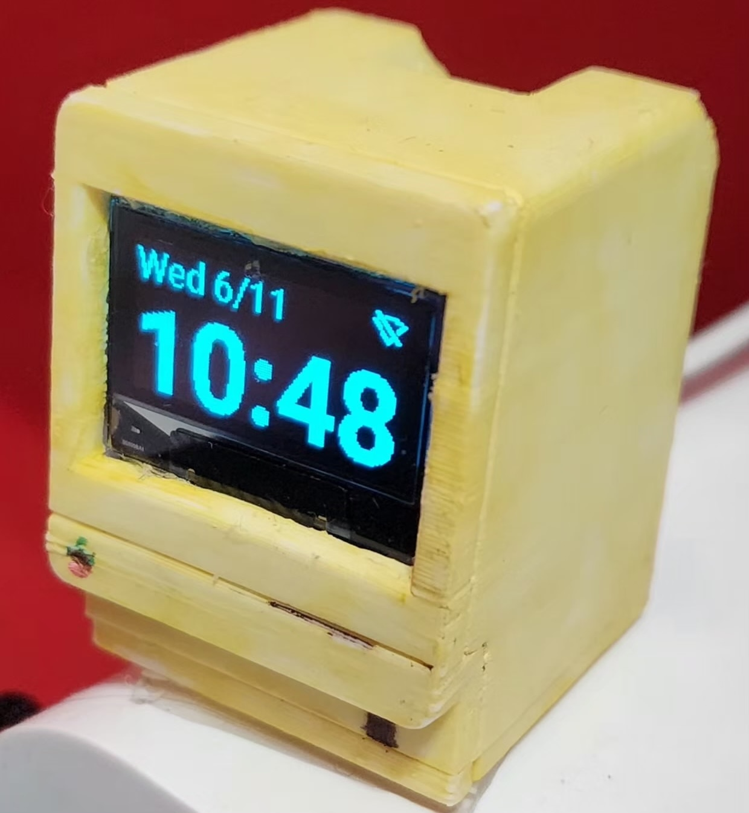
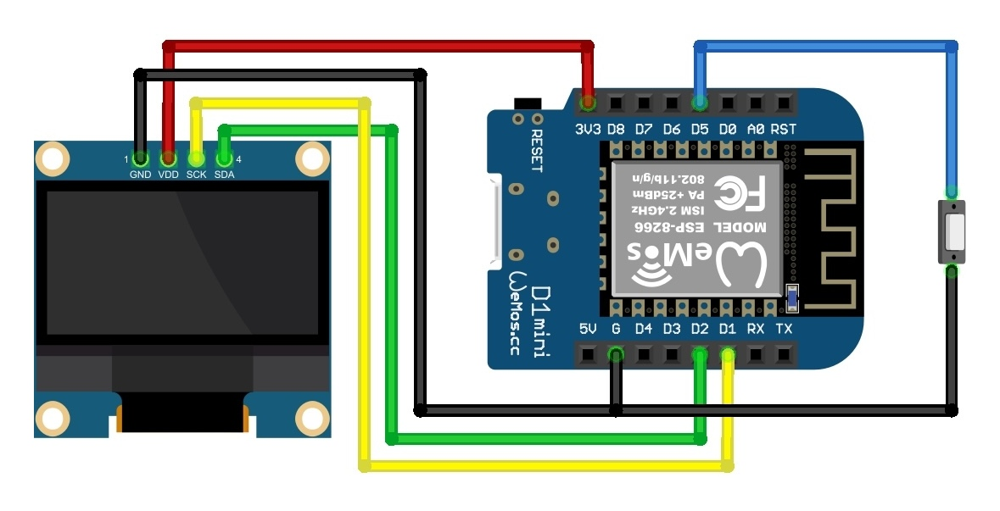

When I first saw @tucksprojects mini Mac case, I knew I wanted to make it a clock. Yet, I'm pretty
picky with my clocks: they need to be readable, nice-looking, and get the time automatically (including daylight
savings). Hence, I set out to make the perfect mini clock.
Tucksprojects provided a slot for a Wemos D1 mini (esp8266) and a 0.96-inch SSD1306 OLED screen. I also glued a small limit switch as a reset button on the inside, and drilled a small hole out the
back of the device to allow for pressing the button with a paperclip. Wiring was done as per the schematic below:

Next, I wrote the Arduino code for the esp8266. You can download it here and compile it with Arduino IDE and the esp8266 boards package.
The code has many features:
The code can be slightly modified to work with esp32 boards as well, which I would be happy to do. Do not hesitate to contact me at contact@yebinkwon.com if you have any questions or need help setting this project up!
@@include('includes/blog/finish.html')